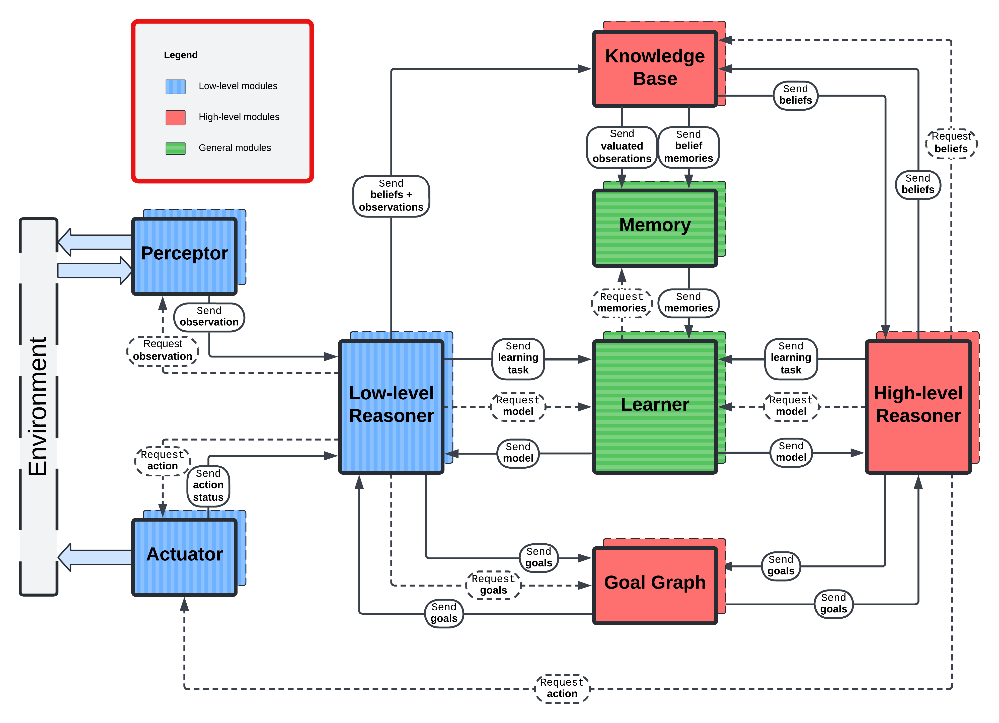

MHAgentA
MHAgentA (Modular Hybrid Agent Architecture) is a Python framework for building containerized agents from cooperating modules. You define each module's behaviour; the framework provides state, scheduling, message routing, process lifecycle, and Docker orchestration. Each module runs in its own process within its agent's container.
Installation and prerequisites
Use Python 3.12 or a later version permitted by the project's ^3.12 requirement.
Running experiments requires Docker with Linux container support and an accessible
Docker daemon. Orchestrator creates a Docker client during construction. The host
Python installation must also include Tkinter, which is imported with the
orchestrator.
Install the released package into your Python environment:
python -m pip install mhagenta
For development from this checkout, use the existing Poetry dependencies:
poetry install --with dev
poetry check --lock
poetry run python -c "import mhagenta; print(mhagenta.__version__)"
Install the project before importing it: mhagenta.__version__ comes from installed
distribution metadata. Installing the checkout on the host does not automatically
install that checkout inside agent images; see Packaging and images.
Agent structure
An agent can use any subset of the eight module roles, with multiple instances of each role. At least one module is needed. Modules communicate along the supported routes shown below.

| Role | Behaviour base in mhagenta.bases |
Purpose |
|---|---|---|
| Low-level reasoner | LLReasonerBase |
Fast decisions and reactions to observations and action results |
| Perceptor | PerceptorBase |
Obtain observations and send them to low-level reasoners |
| Actuator | ActuatorBase |
Execute requests from reasoners and report results to low-level reasoners |
| Knowledge model | KnowledgeBase |
Process beliefs and connect reasoning with stored knowledge |
| High-level reasoner | HLReasonerBase |
Plan, reason about beliefs and goals, and request actions |
| Goal graph | GoalGraphBase |
Coordinate goal updates between reasoning layers |
| Memory | MemoryBase |
Store observations and beliefs and supply memories to learners |
| Learner | LearnerBase |
Process learning tasks and provide models to reasoners |
Some bases have useful default behaviour. KnowledgeBase.on_observed_beliefs()
forwards beliefs to all high-level reasoners. GoalGraphBase.on_goal_update()
forwards updates from one reasoning layer to all reasoners in the other layer.
Other message hooks normally return their state unchanged; inspect the relevant
base before overriding it.
A minimal agent
Save this as example.py. It runs one periodic reasoner, counts three steps, and
requests an early stop. It uses the internal broker supplied by the agent image;
no separate external RabbitMQ server is needed for this example.
from mhagenta import Orchestrator
from mhagenta.bases import LLReasonerBase
from mhagenta.states import LLState
class Counter(LLReasonerBase):
def on_init(self, limit: int) -> None:
self.limit = limit
def step(self, state: LLState) -> LLState:
state.count += 1
self.log(Orchestrator.INFO, f"Count: {state.count}")
if state.count >= self.limit:
state.outbox.terminate_agent("Counter completed")
return state
def main() -> None:
orchestrator = Orchestrator(
save_dir="runs/counter",
step_frequency=1.0,
agent_start_delay=5.0,
exec_duration=30.0,
)
orchestrator.add_agent(
agent_id="demo",
perceptors=[],
actuators=[],
ll_reasoners=Counter(
module_id="counter",
initial_state={"count": 0},
init_kwargs={"limit": 3},
),
)
orchestrator.run()
if __name__ == "__main__":
main()
Run it with python example.py, or poetry run python example.py when using the
checkout. Use a fresh output directory for the first run. The final module snapshot
is written to runs/counter/demo/out/demo.counter.json, and the container log is
saved as runs/counter/demo.log.
add_agent() requires perceptors, actuators, and ll_reasoners even when a role
is unused: pass an empty list for that role. The other role arguments default to
None. Each role accepts a single behaviour instance or a collection; use lists
or tuples for collections. Module IDs must be unique across all roles within an
agent. Agent IDs must be unique within an orchestrator.
Behaviour hooks and state
All behaviour hooks are synchronous. Keep them short and non-blocking so the
module can process scheduled work and messages. Use the role-specific aliases from
mhagenta.states, such as LLState, PerceptorState, and ActuatorState, to get
the appropriate outbox type hints.
| Hook | When it runs | Return value |
|---|---|---|
on_init(**kwargs) |
After runtime attachment and any saved-state loading, before execution is scheduled | None |
on_first(state) |
At execution start, before the first periodic step | Updated or unchanged state |
step(state) |
Periodically, if overridden | Updated or unchanged state |
on_<message_type>(state, sender, ...) |
When the runtime processes an incoming message | Updated or unchanged state |
on_last(state) |
During shutdown, before the final save and communication teardown | Updated or unchanged state |
Leaving step() unmodified makes a module reactive: it still receives lifecycle
hooks and messages but has no periodic step action. Pass setup arguments in the
constructor's init_kwargs dictionary. self.state, self.agent_id, and
self.log() are available from on_init() onward, after the runtime attaches the
behaviour. In the behaviour object's constructor, the agent ID is still None
and runtime state and logging are not yet attached.
Declare persistent fields in initial_state. For example, {"count": 0} registers
state.count, also accessible as state["count"]. Updating an existing field
preserves its registration. Assigning a new attribute or bracket key does not
register it for saving or bracket lookup; use state.load(new_field=value) to add
registered fields later. Avoid names belonging to the state's runtime properties,
methods, or private attributes.
The runtime also exposes:
state.agent_idandstate.module_idfor identity.state.timefor seconds since the scheduled execution start. It can beNonebefore scheduling or negative before that start time.state.directory.internalfor module cards grouped by role, ID, or tags.state.directory.externalfor configured agents and environments.state.outboxfor queued internal messages and termination requests.
Internal messages and directories
Outbox methods enqueue messages. After a hook returns its state, the runtime sends them through the registered routes and clears the queue. Request methods do not wait for replies; replies arrive through later message callbacks.
For example, a low-level reasoner can forward beliefs extracted from an observation to every knowledge module in its agent:
from mhagenta import Belief, Observation
from mhagenta.bases import LLReasonerBase
from mhagenta.states import LLState
class BeliefReasoner(LLReasonerBase):
def on_observation(
self, state: LLState, sender: str, observation: Observation, **kwargs
) -> LLState:
beliefs = [Belief(predicate="observed", arguments=(observation.content,))]
for knowledge in state.directory.internal.knowledge:
state.outbox.send_beliefs(
knowledge_id=knowledge.module_id,
observation=observation,
beliefs=beliefs,
)
return state
This callback requires a topology with a perceptor sending observations and
knowledge modules receiving beliefs. Other common pairs include
request_observation() / PerceptorBase.on_request(),
request_action() / ActuatorBase.on_request(), and
send_status() / LLReasonerBase.on_action_status().
Directory lookups return cards. Internal cards expose module_id, module_type,
and tags; external cards expose agent_id (also used for environment IDs), id,
address, and tags. String keys select exact IDs and integer keys select by
registration order. search(["tag_a", "tag_b"]) selects cards containing both
tags; pass a reusable collection of tags. Empty tag collections match all entries.
The external directory is populated when mas_rmq_uri is configured. Its RabbitMQ
addresses contain host, port, exchange_name, and agent_id or env_id.
.environments returns all environment cards; .environment returns the first,
or None. Select an environment by ID or tags when more than one is registered.
These entries describe configured entities, not live service discovery.
RabbitMQ environments and external messages
An environment behaviour extends MHAEnvBase and uses a plain state dictionary.
Its init_state argument is required; pass None for an empty dictionary.
Orchestrator.add_environment() wraps that behaviour in an RMQEnvironment.
from mhagenta import Orchestrator
from mhagenta.environment import MHAEnvBase
class CounterWorld(MHAEnvBase):
def on_observe(self, state, sender_id, **kwargs):
return state, {"value": state["value"]}
def on_action(self, state, sender_id, **kwargs):
state["value"] += kwargs.get("increment", 1)
return state, {"value": state["value"]}
def configure_world() -> Orchestrator:
orchestrator = Orchestrator(
save_dir="runs/world",
mas_rmq_uri="default",
mas_rmq_exchange_name="world-exchange",
stop_on_agents_term=True,
)
orchestrator.add_environment(
base=CounterWorld(init_state={"value": 0}),
env_id="world",
host="localhost",
port=5672,
exchange_name="world-exchange",
)
return orchestrator
This registers the environment; add agents before running the returned
orchestrator. Agents interact with it through subclasses of RMQPerceptorBase
and RMQActuatorBase, available from mhagenta.defaults.communication. Configure
both with exchange_name="world-exchange" and the same broker. Their constructors
also take the usual module_id, initial_state, and init_kwargs arguments.
Supply tags as a list when using these external communication bases.
- A perceptor calls
self.observe(env_id="world", ...). The request fields become keyword arguments toon_observe(), which returns(state, response_dict). Response fields arrive in the perceptor'son_observation(state, env_id, **kwargs). - An actuator calls
self.act(env_id="world", ...). The request fields become keyword arguments toon_action(). Returningstateor(state, None)sends no response. Returning(state, response_dict), including(state, {}), invokes the actuator'son_status(state, env_id, **kwargs)when the reply arrives. - These external helpers publish through their connector immediately and return
without waiting. Their response hooks must return the module state. To forward
a result to a reasoner, construct an
ObservationorActionStatusand use the internal outbox.
Omitting env_id selects the first external environment card and requires that
card to exist. Selecting an ID does not change the helper's configured broker or
exchange. Use explicit matching exchange names throughout: the environment and
the perceptor/actuator defaults differ.
Environment replies are routed by agent ID and response kind. Multiple perceptors or actuators subscribed to the same reply route receive those replies. Include and echo your own correlation fields when matching responses to individual requests.
For communication between agents, use RMQSenderBase.send(recipient_id, msg) and
override RMQReceiverBase.on_message(state, sender, msg) to return a state. The
recipient is an agent ID string, not its address dictionary. Both endpoints
must use the same broker and exchange. Sending adds a sender field to the supplied
dictionary. RabbitMQ messages are serialized with dill, so both sides need the
Python definitions used by their payloads.
mas_rmq_uri="default" uses a broker at localhost:5672 and attempts to launch a
RabbitMQ management container if a connection cannot be established. A custom
address uses host:port syntax. The environment startup script also checks the
broker's HTTP management endpoint at the configured AMQP port plus 10000,
normally 15672. The orchestrator maps external localhost connections inside
containers to the host gateway.
Timing, shutdown, and persistence
Parameters named step_frequency and status_frequency are intervals in
seconds, not rates in hertz. The orchestrator defaults are 1 second for steps and
5 seconds for status reports. control_frequency bounds the idle scheduling wait;
its default of -1 introduces no positive wait.
agent_start_delay defaults to 60 seconds from the start of run()/arun().
Execution waits for module readiness. Each agent can add a start_delay offset.
When supplying a complete Unix exec_start_time, set agent_start_delay=0 to avoid
adding the global delay to that timestamp. exec_duration is the agent's execution
time limit. Environment durations are adjusted by the orchestrator for startup
timing and are not the same as a module's execution clock.
To finish early, call state.outbox.terminate_agent(reason) in the hook that detects
completion and return the state. The runtime processes the request even with an
otherwise empty outbox, and the root coordinates shutdown. Use on_last() for
final bookkeeping; it already runs during shutdown. module_term_timeout controls
the grace period for each module process to exit. With stop_on_agents_term=True,
the orchestrator requests environment shutdown once all agent containers exit.
Module snapshots contain state.dump(): only registered custom fields. The
directory, clock, and outbox are runtime information. Saving uses JSON by default;
choose save_format="dill" for Python objects that the standard JSON serializer
cannot encode. Save failures are logged as warnings.
state_autosave_interval |
Module saving behaviour |
|---|---|
-1 (default) |
Final save after on_last() |
0 |
Save each processed behavioural state update, plus the final save |
| Positive number | Periodic saves at that interval in seconds, plus the final save |
Module files are <save_dir>/<agent_id>/out/<agent_id>.<module_id>.json or .sav.
Saving writes a temporary file, preserves the previous primary as .backup, and
replaces the primary. resume=True loads saved custom fields before on_init();
it tries the backup if the primary cannot be loaded. Loading merges fields, so new
initial fields absent from the snapshot remain. If neither snapshot can be loaded,
module construction fails.
Environment state is saved separately as <save_dir>/<env_id>/out/<env_id>.json
or .sav on shutdown. The environment runtime does not provide the module
backup/resume mechanism. With num_copies > 1, agent IDs and output directories use
suffixes _0, _1, and so on.
State loading and image/output reuse are separate concerns. An existing image
retains its serialized configuration, including resume. Rebuilding with
force_run=True can delete an existing entity output directory and its snapshots,
even when no old container exists. Preserve snapshots needed for resuming before
using that option.
Packaging and images
Use the add_agent() and add_environment() packaging options for dependencies:
requirements_path: a requirements file installed withpip install -rinside the image.init_script: a shell script executed withshduring image building, before the requirements file is installed. Use it for system dependencies.extra_runtime_sources: local standalone.pyfiles or importable package directories containing__init__.py. Pass a package directory instead of its__init__.pyor a nested module file. Sources are copied beneath/agentand must not conflict with launcher files or automatically copied behaviour sources.
The builder copies local source associated with behaviour classes. Additional
local packages used by those classes may still need extra_runtime_sources;
third-party dependencies belong in requirements_path. Files placed only in the
host environment are not automatically installed in a container.
run() and arun() rebuild agent and environment images by default. Setting
rebuild_agents=False or rebuild_envs=False requires existing images and reuses
their embedded configuration and sources. Rebuild after changing those inputs.
keep_containers=True retains stopped agent/environment containers after normal
completion; host-mounted output files are separate from container retention.
mhagenta_version selects the base image tag. local_build accepts the path to
a framework checkout containing mhagenta/, pyproject.toml, and README.md.
For development, use an unused base-image tag and prerelease=False with
local_build: a cached matching base image can bypass the local build, and the
prerelease installation branch takes precedence over local installation.
The orchestrator and each entity also accept gpu_device_ids: 'none', 'all',
'any', or explicit device IDs. Agents inherit the orchestrator's setting when
their value is None; environments default to 'none' and inherit only when
explicitly given None. GPU execution requires a compatible Docker host.
Async use and extension points
orchestrator.run() owns its event loop. From an existing event loop, use
await orchestrator.arun(...) with the same options. Image preparation still uses
synchronous Docker operations before the container tasks start.
To implement another internal transport, extend
Connector. Its docstrings describe
initialization, channel registration, synchronous send methods, callbacks, and
serialization responsibilities. Select it through connector_cls and
connector_kwargs; the supplied external RabbitMQ behaviour bases retain their
own transport configuration.
The scripts under mhagenta/core/*_launcher.py,
mhagenta/environment/environment_launcher.py, and mhagenta/scripts/ are
framework entry points with container paths and generated parameter files. User
experiments should launch through the orchestrator.
Building the documentation
The published API reference is hosted
from the gh-pages branch. Its pages are generated by pdoc and packaged by MkDocs.
To regenerate them from this checkout, install the documentation dependency group
and run the build script:
poetry install --with dev,docs
poetry run python scripts/build_docs.py
The script updates the generated pages under docs/ and builds the complete site
in build/site/. Preview it with poetry run mkdocs serve. Regenerate after
changing docstrings; MkDocs alone only packages the existing API HTML.
After reviewing the build, publish with poetry run mkdocs gh-deploy --strict.
This updates gh-pages without switching the current checkout to that branch.
Commit source and generated-page changes separately on the development branch.